wordcountaddin::word_count("index.qmd")For information on available language packages for 'koRpus', run
available.koRpus.lang()
and see ?install.koRpus.lang()[1] 1306Project for Patterns and trends in environmental data MSc ENR FS24
Auch wenn sich Personen nicht kennen, können sie sich unbeabsichtigt begegnen. In dieser Studie wurde ein Treffpunkt von Person A und Person B identifiziert, an dem sie sich zur gleichen Zeit am gleichen Ort innerhalb eines Gemeindegebietes aufhielten, obwohl sie sich zu diesem Zeitpunkt nicht kannten. Darüber hinaus wurden weitere Orte identifiziert, an denen sich beide Personen aufhielten, aber zu unterschiedlichen Zeitpunkten. Eine Korrelation zwischen der zurückgelegten Distanz einer Person und dem jeweiligen Monat im Jahr konnte jedoch nicht festgestellt werden. Für diese Studie wurden Bewegungsdaten aus der Google Maps Timeline analysiert um zu verstehen, wie sich die Bewegungsmuster einer Person über die Zeit verändern und ob die zurückgelegte Distanz von saisonalen Faktoren beeinflusst wird. Ausserdem wurde untersucht, wie sich zwei Personen, die sich nicht kannten, innerhalb einer Gemeinde bewegen. Ziel war es herauszufinden, ob die beiden Personen ähnliche Bewegungsmuster aufweisen, um Einblicke in die sozialräumliche Dynamik der Gemeinde zu erhalten. Dabei werden Unterschiede und Gemeinsamkeiten in den Bewegungsdaten untersucht, um Muster zu erkennen und potentielle Treffpunkte zu identifizieren.
Die Untersuchung menschlicher Bewegungsmuster innerhalb einer Gemeinde war historisch durch traditionelle Methoden wie Befragungen und Beobachtungen begrenzt, was oft zu einer eingeschränkten Datenbasis führte. Mit dem Fortschritt der Digitalisierung und der Verbreitung von Smartphones hat sich die Datenerhebung stark verändert. Diese Geräte ermöglichen die Aufzeichnung von umfangreichen Bewegungsdaten, welche tiefe Einblicke in das Verhalten von Menschen bieten. Die Studie von Eagle und Pentland (2009) zeigt beispielsweise, wie Mobiltelefondaten genutzt werden können, um alltägliche Verhaltensmuster, zu identifizieren und zu analysieren. Diese Muster liefern Informationen über soziale Interaktionen und Gewohnheiten von Individuen. Parallel dazu hat die Forschung von Gonzalez, Hidalgo und Barabasi (2008) aufgezeigt, dass sich die Bewegungsmuster von Personen wiederholen. Dies weist auf ähnliche Mobilitätsmuster der verschiedenen Personen hin. Weiterführend hat die Arbeit von Ratti et al. (2006) gezeigt, wie Standortdaten von Mobiltelefonen zur Analyse und Visualisierung urbaner Bewegungsmuster eingesetzt werden können. Somit konnten Erkenntnisse für das Verständnis städtischer Dynamiken gewonnen werden.
Diese Arbeit will an diese Erkenntnisse anknüpfen und sich umfangreiche Bewegungsdatensätzen, welche mit Mobiltelefonen erhoben wurden, zu nutzen machen. Damit sollen Muster innerhalb von Gemeinden identifizieren werden. Die Arbeit orientiert sich an den Forschungsmethoden von Patrick Laube. Insbesondere wird untersucht, ob Personen, die sich zuvor nicht kannten, ähnliche Muster in ihren Bewegungen aufweisen, gleiche Orte besuchen oder sich sogar zur gleichen Zeit am gleichen Ort aufgehalten haben. Die zentrale Frage dieser Arbeit lautet:
Wie beeinflussen zeitliche und räumliche Faktoren die Bewegungsmuster von Individuen innerhalb einer Gemeinde und inwiefern überschneiden sich diese Muster zwischen Personen, die sich nicht kennen. Daraus ergeben sich folgende Unterfragen:
Wie variieren die Bewegungsmuster von Individuen in Abhängigkeit von saisonalen Bedingungen?
Welche Unterschiede und Gemeinsamkeiten existieren in den Bewegungsdaten von zwei verschiedenen Personen, die sich während der Datenaufnahme nicht kannten? Gibt es Orte, die beide Personen besuchen?
Wiederholen sich Besuche bestimmter Orte durch die Individuen? Gibt es Übereinstimmungen in den mehrmals besuchten Orten?
Befanden sich die beiden Personen möglicherweise zum gleichen Zeitpunkt am selben Ort, und haben sie sich somit unbeabsichtigt getroffen?
Durch diese Fragestellungen sollen die Bewegungsmuster von zwei Personen und die räumliche Überschneidung innerhalb einer Gemeinde analysiert werden und einen Einblick liefern, wie sich Personen in einer Gemeinde bewegen und unter Umständen begegnen.
Die Datenerhebung erfolgte mittels Android-Smartphones über die Google Maps Timeline. Hierbei wurden Bewegungsdaten von Person A von Januar 2022 bis Mai 2024 und von Person B von April bis Mai 2024 analysiert. Die Daten liegen im JSON-Format vor und verwenden das WGS84-Koordinatensystem, welches als Grundlage für die weiterführende Analyse diente. Die Standortdaten wurden über die Funktion „Location History (Timeline)“ bei Google und den Exportdienst takeout.google.com extrahiert. Nach dem Herunterladen wurden die Daten mittels R und RStudio R 4.3.3 (CRAN, 2024) aufbereitet. Die Konvertierung der geografischen Koordinaten von der E7-Notation in Dezimalgrade und die räumliche Aufbereitung waren zentrale Aspekte der Datenverarbeitung. Die Daten wurden für jede Person separat extrahiert und in einem geografischen Dataframe mit umgewandelten Zeitstempeln gespeichert. Für die räumliche Analyse kamen zusätzliche Datenquellen zum Einsatz. SwissBOUNDARIES3D von swisstopo (2024) lieferte SHP-Dateien für die Grenzen der untersuchten Gemeinde, die ins WGS84-System konvertiert wurden. Für die Darstellung der Analyse in Europa, welche sich auch im Code befindet, wird ein Shapefile für europäische Länder von der Technical University of Denmark (2023) verwendet. Für die Resultate im Bericht dienen OpenStreetMap-Daten als Kartenhintergrund in den Visualisierungen. Die Auswertung der zeitlichen Bewegungsdaten von Person A umfasst die Jahre 2022 bis 2024, einschliesslich Daten von Reisen innerhalb Europas. In den Jahren 2022 und 2023 handelt es sich um Datensätze eines ganzen Jahres. Der Datensatz aus dem Jahr 2024 enthält nur Daten der Monate Januar bis Mai. Die komparative Analyse zwischen den Personen konzentrierte sich auf das Gemeindegebiet, aufgrund der Verfügbarkeit der Daten von Person B. Die Bewegungsmuster wurden durch Punktdiagramme visualisiert, wobei Längen- und Breitengrade die Achsen bildeten. Standorte wurden durch Zählen wiederholter Koordinatenpunkte definiert, wobei nur bewegte Punkte berücksichtigt wurden. Treffpunkte wurden identifiziert, wenn Personen sich innerhalb eines 100-Meter-Radius zum selben Zeitpunkt (auf 15 Minuten gerundete Zeitstempel) befanden, berechnet durch die Haversine-Formel. Korrelationen zwischen zurückgelegter Distanz und Zeit wurde in R durchgeführt, um Muster und Trends zu identifizieren. Aus Datenschutzgründen werden die Daten anonymisiert veröffentlicht, wobei die Personen als A und B gekennzeichnet und der Name der untersuchten Gemeinde vermieden wurde. Koordinaten wurden auf den Karten nicht dargestellt. Bei Bedarf an detaillierteren Datensätze können Interessierte sich an die Autoren der Studie wenden.
Fehler im R-Code und Funktionen, die weder im Unterricht thematisiert wurden, noch an das Vorwissen der Autor:innen anknüpfte, wurden mit Unterstützung von ChatGPT 3.5 behoben respektive erstellt.
Abbildung 1 stellt die Variation der Bewegungsmuster von Person A über verschiedene Zeitperioden, basierend auf der zurückgelegten Distanz pro Monat in den Jahren 2022 bis 2024, dar. Es lässt sich beobachten, dass die zurückgelegten Distanzen in den Monaten August der Jahre 2022 und 2023 jeweils die höchsten des Jahres sind. Des Weiteren sind die Distanzen in den Monaten Januar und Februar der Jahre 2022 und 2023 deutlich höher als im Jahr 2024. Dasselbe gilt für die Monate April und Mai, jedoch nicht für den März. In diesem Monat liegt die zurückgelegte Distanz im 2024 über denjenigen von 2022 und 2023. Die höchste zurückgelegte Distanz in einem Jahr, verzeichnet das Jahr 2023 mit 47.5 tausend Kilometern. Die Vergleichbarkeit mit dem Jahr 2024 ist jedoch nicht gegeben, da in diesem Jahr nur Daten bis Mai 2024 vorhanden sind. Im Jahr 2024 ist im März eine Zunahme der zurückgelegten Distanzen im Vergleich zu den anderen Monaten des Jahres zu verzeichnen. Im Mittel sind die zurückgelegten Distanzen im Jahr 2024 jedoch geringer als in den Vorjahren. Eine Korrelationsanalyse zwischen den Monaten und der zurückgelegten Distanz ergab einen Korrelationskoeffizienten von 0.0495, was darauf hinweist, dass kein signifikanter Zusammenhang besteht.

Abbildung 1 zeigt die monatliche zurückgelegte Distanz von Person A in Kilometern für die Jahre 2022 (n = 135’176), 2023 (n=130’671) und 2024 (n=49’609) aufgeteilt nach Monat.
Weitere Auswertungen, in denen die Abhängigkeit der zurückgelegten Distanz von der Uhrzeit oder des Wochentages untersucht wurde, sind im Anhang zu finden. Auch diese Resultate bestätigen die Diskussion oberhalb.
Abbildung 2 zeigt Unterschiede in den Bewegungsdaten zwischen den beiden Versuchspersonen. Bei der Analyse der Verteilung der Koordinatenpunkte zeigt sich, dass sich die Bewegungspunkte grösstenteils auf den Strassen befinden. Weiter zeichnet sich ab, dass die Bewegungsmuster von Person B stärker geclustert sind als diejenigen von Person A. Die Bewegungspunkte von Person A sind stärker auf das gesamte Gemeindegebiet verteilt. Es gibt jedoch auch Bereiche, die frei von Bewegungspunkten beider Personen sind. Hierbei könnte es sich um Zonen handeln, die weniger frequentiert werden oder unzugänglich sind. Gleichzeitig gibt es aber auch Orte, die sowohl von Person A als auch von Person B besucht wurden. Weiter konnten auch Orte identifiziert werden, die lediglich von einer der beiden Personen frequentiert wurden.

Abbildung 2 zeigt die Bewegungspunkte von Person A (n= 831) und Person B (n= 67) innerhalb des ausgewählten Gemeindegebiets. Sie sind dargestellt auf einer Hintergrundkarte von OpenStreetMap. Die grauen Linien im Hintergrund repräsentieren die Strassen (Hintergrundkarte von OpenStreetMap).
Abbildung 3 vergleicht die Häufigkeit der besuchten Orte der beiden Personen und identifiziert Treffpunkte. Die Abbildung zeigt, dass Person A eine grössere Anzahl von Orten häufiger besucht hat als Person B. Während einige Orte von beiden Personen besucht wurden, wie durch überlappende blaue und rote Punkte angezeigt wird, gibt es zahlreiche Orte, die ausschliesslich von Person A besucht wurden. Person B hingegen zeigt weniger Bewegungspunkte, die nicht von Person A frequentiert wurden. Die Analyse der Treffpunkte zeigt, dass es einen Treffpunkt zwischen Person A und Person B gegeben hat, der auf den 11. April 2024 um 17:00 Uhr fällt. Dieser Treffpunkt befindet sich an einem Ort, den Person A mehr als zehn Mal und Person B mehr als zweimal besucht hat. Die Übereinstimmung könnte auf einen gemeinsamen Interessensschwerpunkt oder eine Gemeinsamkeit im Alltag der beiden Personen hinweisen.

Abbildung 3 visualisiert die GPS-Punkte von Person A und Person B. Die Grösse der Punkte variiert entsprechend der Häufigkeit, mit der sich die Personen an diesen Orten aufgehalten haben. Ein grüner Punkt markiert einen Treffpunkt, an dem sich Person A und Person B (Hintergrundkarte von OpenStreetMap).
Diese Analyse wurde auch mit einem Radius von 250 und 500 Meters durchgeführt, was dazu führte, dass sich die Anzahl Treffen signifikant erhöhten.
Die Untersuchung der Bewegungsdaten von 2022 bis 2024 hat einige interessante Muster aufgedeckt, die zeigen, wie Menschen sich über die Zeit bewegen. Einer der wichtigsten Erkenntnisse unserer Studie ist, dass es kaum einen Zusammenhang zwischen der zurückgelegten Distanz und den Monaten unserer Versuchsperson gibt. Dieses Ergebnis legt nahe, dass der Monat einen geringen Einfluss auf das Bewegungsverhalten unserer Versuchsperson hat. Es könnten jedoch andere Faktoren wie Lebens- und Arbeitsbedingungen oder Wetterbedingungen einen stärkeren Einfluss auf die Mobilität der Person haben. Es wäre interessant, diese Einflüsse in zukünftigen Studien genauer zu betrachten, um ein besseres Verständnis davon zu erhalten, welche Faktoren einen Einfluss auf die Mobilität einer Person haben. Somit könnte eine Erklärung für die Variabilität in den zurückgelegten Distanzen über die Zeit unserer Testperson gefunden. Die Analyse zeigt deutlich, dass die Koordinatenpunkte von Person A regelmässiger über das untersuchte Gebiet verteilt sind als die von Person B. Dies könnte darauf hindeuten, dass Person A das Smartphone konsequenter zur Datenaufzeichnung genutzt hat, während Person B möglicherweise das Smartphone nicht immer bei sich getragen hat oder die Datenaufzeichnung zeitweise ausgeschaltet war. Diese Unterschiede in der Datensammlung können signifikante Auswirkungen auf die Ergebnisse unserer Analyse haben und unterstreichen die Bedeutung einer kontinuierlichen und zuverlässigen Datenerfassung in solchen Studien. Ein weiterer interessanter Aspekt unserer Studie sind die Unterschiede in der Häufigkeit, mit der bestimmte Orte besucht wurden. Person A scheint bestimmte Orte häufiger besucht zu haben, was auf einen routinierten und vorhersehbaren Tagesablauf hindeutet. Im Gegensatz dazu zeigt Person B weniger Regelmässigkeit in ihren besuchten Orten. Jedoch könnte auch der Unterschied in der Datenmenge der beiden Personen zu diesem Ergebnis geführt haben. Ein interessanter Punkt in unserer Studie ist der Treffpunkt von Person A und B. An diesem Ort waren beide Personen zur gleichen Zeit, was auf gemeinsame Interessen oder wichtige Treffpunkte im Alltag hinweisen könnte. Diese Erkenntnisse könnten in zukünftigen Untersuchungen weiter vertieft werden, um besser zu verstehen, was der Grund für solche Treffpunkte ist. Auch die Veränderung in der Häufigkeit von Treffen vor und nach dem Kennenlernen der beiden Personen, wäre eine Interessante Forschungsfrage für weitere Arbeiten. Ausserdem könnte das Verhältnis von geplanten und zufälligen Treffen ermitteln werden. Es ist auch zu erwähnen, dass unsere Studie einige Einschränkungen hat. Die unterschiedliche Menge an Daten zwischen Person A und Person B könnte unsere Ergebnisse beeinflusst haben. Auch die gelegentliche Deaktivierung der GPS-Funktion und die allgemeine Unzuverlässigkeit der Standortdaten aus der Google Maps Timeline könnten die Genauigkeit unserer Analyse beeinträchtigt haben. Denn die Genauigkeit von Google Maps Daten hängt massgeblich von der verwendeten Technologie, sowie weiteren Faktoren ab. Zudem ist auch die Zuordnung der einzelnen Akitvitäten nicht immer eindeutig (Macarulla Rodriguez et al. 2018, Parady et al. 2023). Diese technischen Herausforderungen sind kritische Faktoren, die in zukünftigen Studien adressiert werden müssen, um die Qualität und Zuverlässigkeit der gesammelten Daten zu verbessern. Zusammenfassend lässt sich sagen, dass unsere Studie wertvolle Einblicke in die Bewegungsmuster von Personen bietet und wichtige Fragen über die Faktoren aufwirft, die diese Muster beeinflussen. Zukünftige Forschungen sollten darauf abzielen, die Datenerfassungstechniken zu verbessern, unter anderem auch eine konsequentere Datenaufnahme über einen längerfristigen Zeitraum beider Personen gewährleisten, um eine umfassendere Datengrundlage zu schaffen. Dies würde es ermöglichen, die Komplexität menschlicher Bewegungsmuster genauer zu verstehen und zuverlässigere Informationen über die Faktoren zu erhalten, die das Bewegungsverhalten der Menschen beeinflussen.
CRAN (2024): RStudio: Integrated Development Environment for R (Version 4.3.3). [https://cran.r-project.org/; 17.6.2024].
Eagle, Nathan und Pentland, Alex Sandy (2009): Eigenbehaviors: identifying structure in routine. In: Behavioral Ecology and Sociobiology 63/7 (Mai). S.1057–1066.doi:10.1007/s00265-009-0739-0.
González, Marta C.; Hidalgo, César A. und Barabási, Albert-László (2008): Understanding individual human mobility patterns. In: Nature 453/7196 (Juni). S.779–782.doi:10.1038/nature06958.
Macarulla Rodriguez, Andrea; Tiberius, Christian; Van Bree, Roel und Geradts, Zeno (2018): Google timeline accuracy assessment and error prediction. In: Forensic Sciences Research 3/3 (Juli). S.240–255.doi:10.1080/20961790.2018.1509187.
OpenStreetMap OpenStreetMap. In: OpenStreetMap. [https://www.openstreetmap.org/; 21.6.2024].
Parady, Giancarlos; Suzuki, Keita; Oyama, Yuki und Chikaraishi, Makoto (2023): Activity detection with google maps location history data: Factors affecting joint activity detection probability and its potential application on real social networks. In: Travel Behaviour and Society 30 (Januar). S.344–357.doi:10.1016/j.tbs.2022.10.010.
Ratti, Carlo; Frenchman, Dennis; Pulselli, Riccardo Maria und Williams, Sarah (2006): Mobile Landscapes: Using Location Data from Cell Phones for Urban Analysis. In: Environment and Planning B: Planning and Design 33/5 (Oktober). S.727–748.doi:10.1068/b32047.
swisstopo swissBOUNDARIES3D. [https://www.swisstopo.admin.ch/de/landschaftsmodell-swissboundaries3d#swissBOUNDARIES3D—Download; 17.6.2024].
swisstopo (b) REFRAME. [https://www.swisstopo.admin.ch/de/koordinaten-konvertieren-reframe; 17.6.2024].
Technical University of Denmark (2023): Shapefile of European countries. Technical University of Denmark. doi:10.11583/DTU.23686383.v1. [https://data.dtu.dk/articles/dataset/Shapefile_of_European_countries/23686383/1; 17.6.2024].
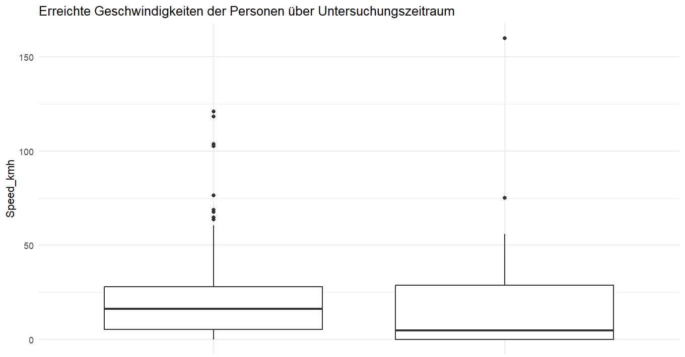
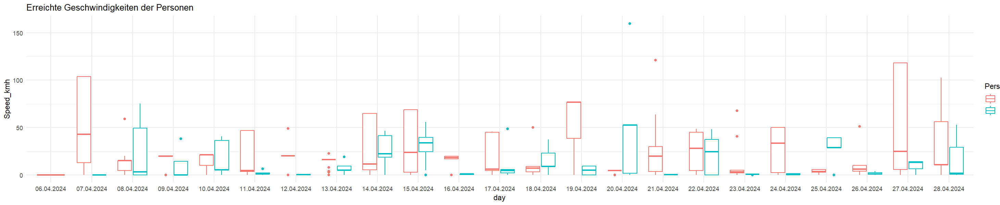


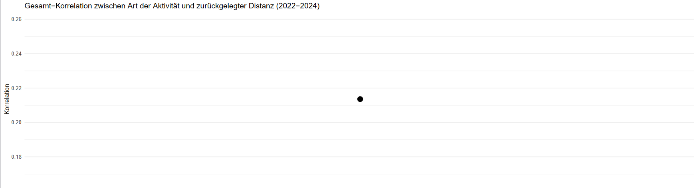
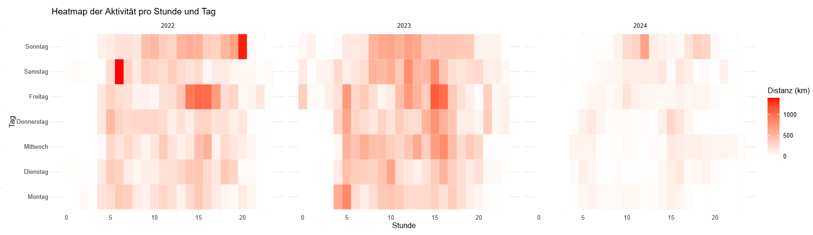
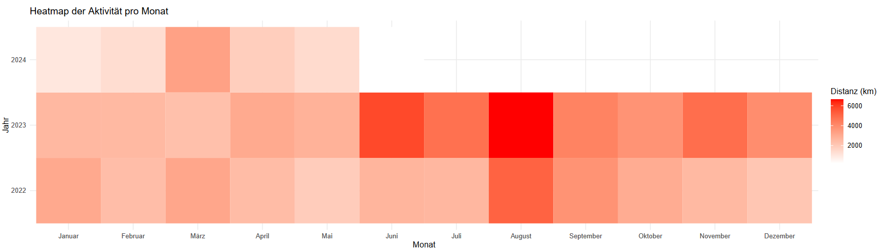
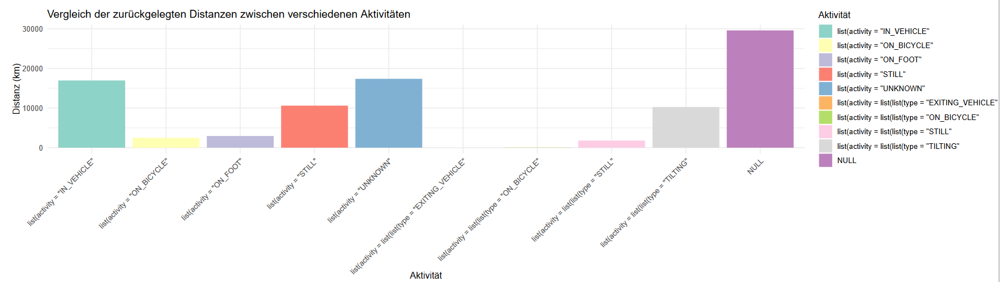
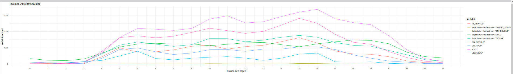
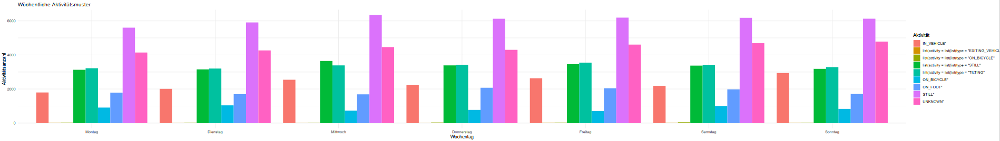
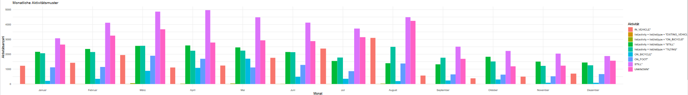
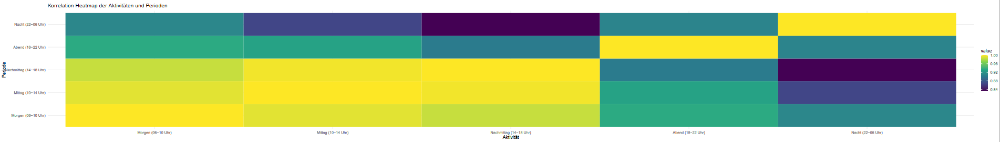
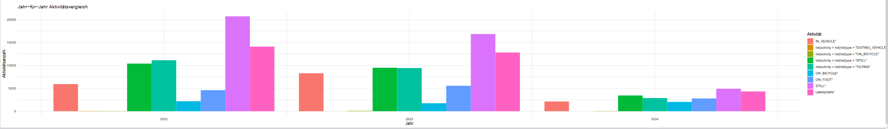
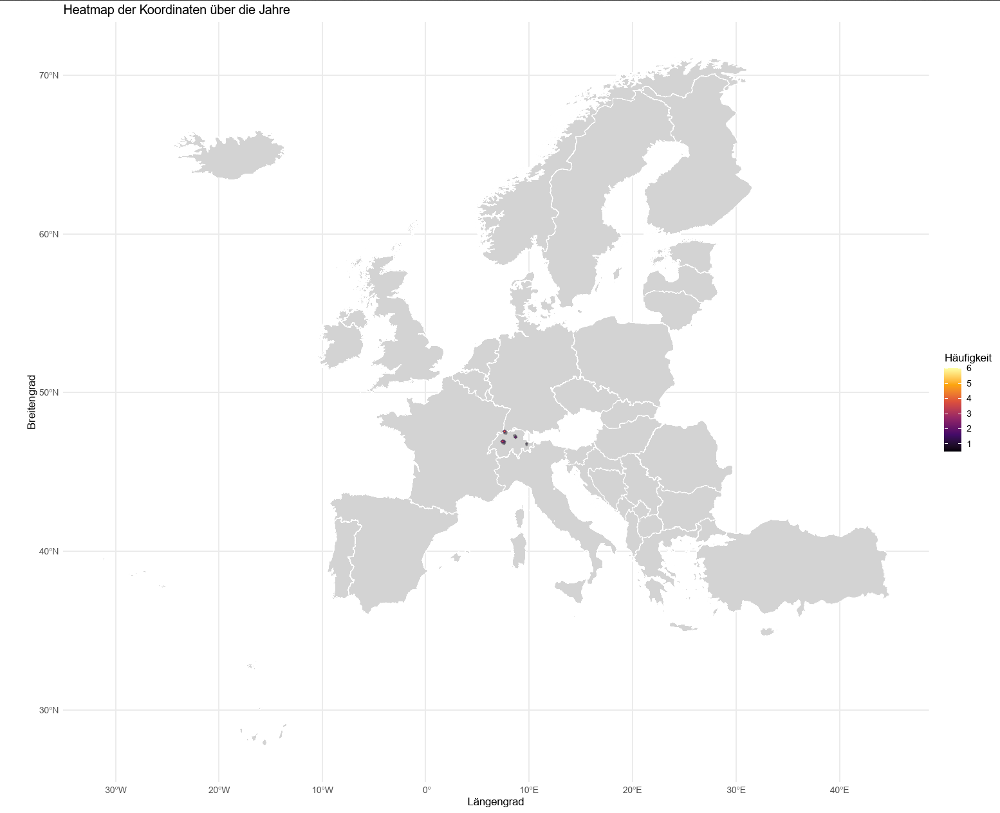
wordcountaddin::word_count("index.qmd")For information on available language packages for 'koRpus', run
available.koRpus.lang()
and see ?install.koRpus.lang()[1] 1306